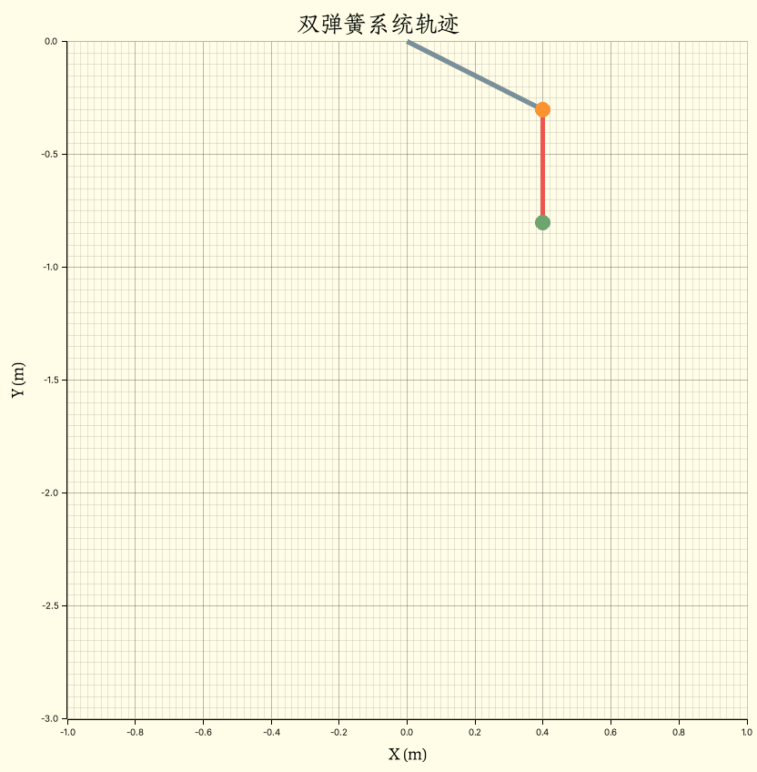
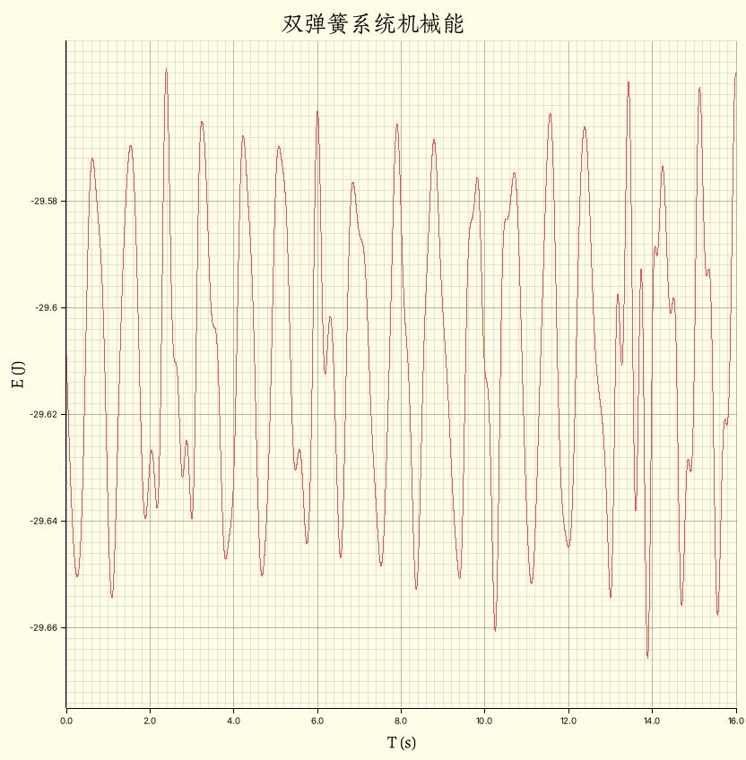
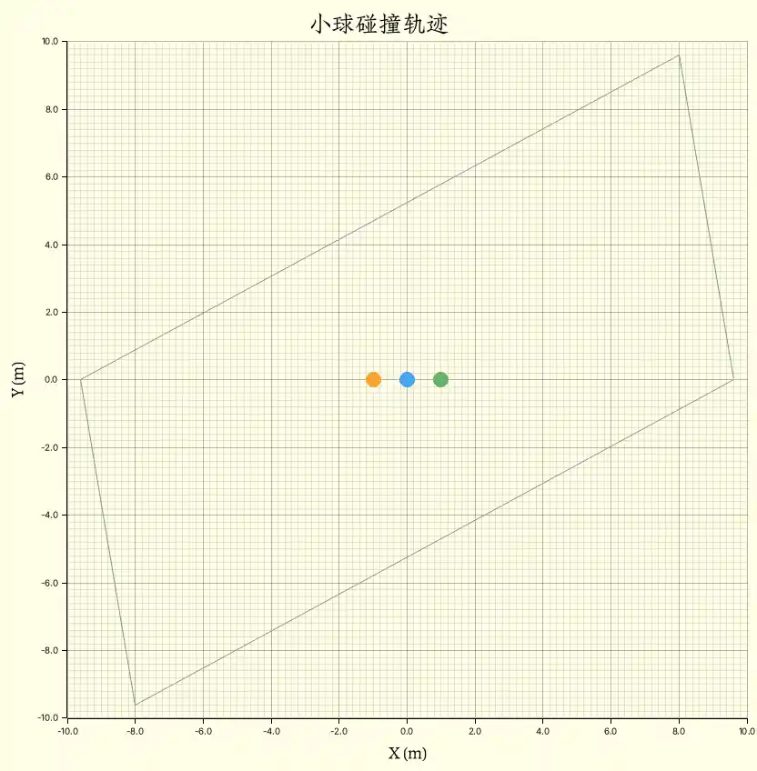
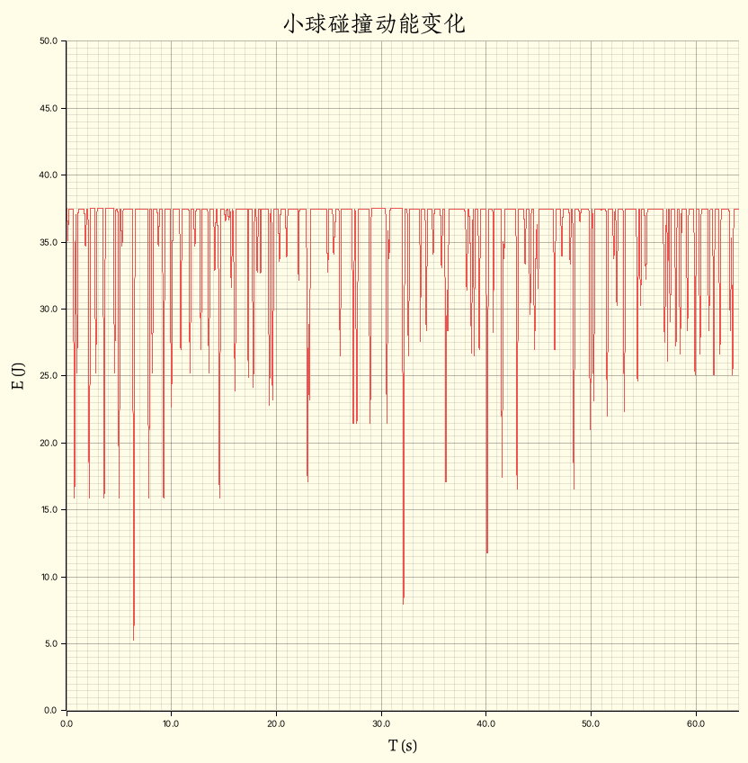

Phyrs - 0x06
archive time: 2025-07-17
唉，误差
我们再来看几个多体系统分析的例子
弹簧系统
假设我们有两个弹簧，其中一个一端固定在天花板上，另一端有一质量为 $m_0$ 的小球
并且 $m_0$ 还接着另一个弹簧，第二个弹簧末端有一质量为 $m_1$ 的小球
由于第一个弹簧是固定弹簧，所以其对 $m_0$ 的弹力可以被视为外力，
而 $m_0$ 和 $m_1$ 之间的弹力则是系统内力
\begin{gathered}
\vec{F}_{\textnormal{ex}\left[m_0\right]}
= - k_0 \left(\lVert\vec{r}_0\rVert - r_{e 0}\right) \hat{r}_0 \\\\
\vec{F}_{m_0 m_1}
= - k_1 \left(\lVert\vec{r}_1 - \vec{r}_0\rVert - r_{e 1}\right)
\dfrac{\vec{r}_1 - \vec{r}_0}{\lVert\vec{r}_1 - \vec{r}_0\rVert}
\end{gathered}
其中 $k_n$ 和 $r_{e n}$ 是第 $n + 1$ 个弹簧的劲度系数和平衡长度
设弹簧劲度系数和平衡长度分别为 $100 \,\mathrm{kg/s^2}$ 和 $0.5 \,\mathrm{m}$，
包含重力，使用 Rust 可以表示为：
let fg = Rc::new(move |p: Particle<Double, 2>| -> VectorC<Double, 2> {
-basis_vector(2) * Double::PI.power(Double::of(2.0)) * p.mass
});
let forces: Vec<SystemForce<Double, 2>> = vec![
SystemForce::ExternalForce(
0,
fixed_linear_spring(Double::of(100.0), Double::of(0.5), VectorC::default()),
),
SystemForce::ExternalForce(0, fg.clone()),
SystemForce::ExternalForce(1, fg),
SystemForce::InternalForce(0, 1, linear_spring(Double::of(100.0), Double::of(0.5))),
];假设 $m_0 = 2 \,\mathrm{kg}$，初始位移为 $\left(0.4, -0.3\right)$，
而 $m_1 = 3 \,\mathrm{kg}$，初始位移为 $\left(0.4, -0.8\right)$，初速度都为 $\vec{0}$，则：
let system = ParticleSystemBuilder::<Double, 2>::of()
.add_particle(Particle::without_charge(
Double::of(2.0),
basis_vector(1) * Double::of(0.4) + basis_vector(2) * Double::of(-0.3),
VectorC::default(),
Double::zero(),
))
.add_particle(Particle::without_charge(
Double::of(3.0),
basis_vector(1) * Double::of(0.4) + basis_vector(2) * Double::of(-0.8),
VectorC::default(),
Double::zero(),
))
.build();最后我们可以得到这么一个轨迹图：

机械能守恒
这里，系统满足机械能守恒1的条件，即只有保守力2做功，并且系统与外界无机械能交换
我们可以尝试验证一下我们的模拟系统是否满足理论，其中机械能由势能和动能组成：
\begin{gathered}
E_m = E_k + U\\\\
E_k = \sum_i \dfrac{1}{2} m_i \lVert\vec{v}_i\rVert^2
\end{gathered}
势能部分，这个系统仅包含两个小球的重力势能以及两个弹簧的弹性势能:
let p4gs = states
.iter()
.map(|s| {
s.particles
.iter()
.map(|p| {
potential_for_gravity(
p.mass.clone(),
Double::PI.power(Double::of(2.0)),
p.position[(2, 1)].clone(),
)
})
.fold(Double::zero(), |acc, e| acc + e)
})
.collect::<Vec<Double>>();
let p4ss = states
.iter()
.map(|s| {
let p4s = potential_for_spring(Double::of(100.0), Double::of(0.5));
let fixed = Particle::without_charge(
Double::zero(),
VectorC::default(),
VectorC::default(),
Double::zero(),
);
p4s(fixed, s.particles[0].clone()) + p4s(s.particles[0].clone(), s.particles[1].clone())
})
.collect::<Vec<Double>>();其中 states 是我们模拟得到的数据：
let f2a = Rc::new(
|force: Rc<dyn Fn(Particle<Double, 2>) -> VectorC<Double, 2>>| -> Rc<dyn Fn(_) -> _> {
Rc::new(move |p: Particle<Double, 2>| -> VectorC<Double, 2> {
force(p.clone()) / p.mass
})
},
);
let total_time = 16.0;
let init_step = Double::of(1e-3);
let one_step = ParticleSystem::system_transition(
forces,
f2a,
init_step,
Rc::new(Particle::default_transition),
);
let states = system
.simulate(one_step)
.take_while(|s| s.time <= Double::of(total_time))
.enumerate()
.inspect(|(n, s)| {
if n.is_multiple_of(512) {
let used_time = timer
.elapsed()
.expect("Error[two_spring::run]: Failed to get the time elapsed.")
.as_secs_f64();
println!(
"{:.2} min => {} | rest: {:.2} min",
used_time / 60.0,
s.time,
(total_time * used_time / s.time.raw() - used_time) / 60.0
)
}
})
.map(|(_, s)| s)
.collect::<Vec<_>>();动能和势能的计算函数定义如下：
fn potential_for_gravity<R: RealFloat>(m: R, g: R, h: R) -> R {
m * g * h
}
fn potential_for_spring<'a, R: RealFloat + 'a, const E: usize>(
k: R,
original_length: R,
) -> Rc<dyn Fn(Particle<R, E>, Particle<R, E>) -> R + 'a> {
Rc::new(move |center: Particle<R, E>, p: Particle<R, E>| -> R {
let distance = euclidean_norm(&(center.position - p.position)) - original_length.clone();
R::half() * k.clone() * distance.absolute_value().power(R::one() + R::one())
})
}
fn kinetic_energy<R: RealFloat, const E: usize>(s: &ParticleSystem<R, E>) -> R {
s.particles
.iter()
.map(|p| (p.mass.clone(), &p.velocity))
.map(|(m, v)| R::half() * m * euclidean_norm(v).power(R::one() + R::one()))
.fold(R::zero(), |acc, e| acc + e)
}结合系统动能，我们可以得到模拟数据中系统的机械能：
let mes = states
.iter()
.map(|s| (s.time.raw(), kinetic_energy(s)))
.zip(p4gs.iter())
.zip(p4ss.iter())
.map(|(((t, k), g), s)| (t, (k + g.clone() + s.clone()).raw()))
.collect::<Vec<_>>();通过作图，可以发现在初始步长 $\mathrm{d}t = 10^{-3} \,\mathrm{s}$ 的情况下3，机械能也不是守恒的：

在 $16 \,\mathrm{s}$ 内，相对误差约为 $0.168\\%$，这主要是浮点数截断误差以及数值模拟算法的误差
碰撞
小球的碰撞也是多体模型中非常重要的一个例子，这里我们假设碰撞遵循弹性碰撞，并且弹力满足：
F_k = \begin{cases}
0 & \textnormal{if}\quad\lVert\Delta{\vec{r}}\rVert \gt r_e \\
-k \left(\lVert\Delta{\vec{r}}\rVert - r_e\right) \Delta{\hat{r}} & \textnormal{otherwise}
\end{cases}
其中 $r_e$ 是我们认为物体快要发生碰撞时两个小球中心的最小距离，
这个模型的难点在于这个距离以及 $k$ 要如何寻找
$k$ 太小或太大都有可能让系统的动能不守恒，
而如果 $r_e$ 仅设置为物体大小，那么对于小物体，可能会导致错位，
即速度太快，在碰撞判定前就已经通过物体，导致无法正常碰撞
这里就是我的设置：
let wall_force =
Rc::new(
move |p1: VectorC<Double, 2>,
p2: VectorC<Double, 2>|
-> Rc<
dyn Fn(Double) -> Rc<dyn Fn(Particle<Double, 2>) -> VectorC<Double, 2>>,
> {
Rc::new(move |size: Double| -> Rc<_> {
let p1 = p1.clone();
let p2 = p2.clone();
Rc::new(move |p: Particle<Double, 2>| -> VectorC<Double, 2> {
let p1p2 = p2.clone() - p1.clone();
let p1p = p.position.clone() - p1.clone();
let t = dot_product(&p1p, &p1p2) / dot_product(&p1p2, &p1p2);
if t > Double::one() || t < Double::zero() {
VectorC::default()
} else {
let d = p1.clone() + p1p2 * t;
billiard(Double::of(k0), size.clone())(
Particle::without_charge(
Double::zero(),
d,
VectorC::default(),
Double::zero(),
),
p,
)
}
})
})
},
);
let wall_ab = wall_force(point_a.clone(), point_b.clone());
let wall_bc = wall_force(point_b.clone(), point_c.clone());
let wall_cd = wall_force(point_c.clone(), point_d.clone());
let wall_da = wall_force(point_d.clone(), point_a.clone());
let forces: Vec<SystemForce<Double, 2>> = vec![
SystemForce::ExternalForce(0, wall_ab(Double::of(0.8))),
SystemForce::ExternalForce(0, wall_bc(Double::of(0.8))),
SystemForce::ExternalForce(0, wall_cd(Double::of(0.8))),
SystemForce::ExternalForce(0, wall_da(Double::of(0.8))),
SystemForce::ExternalForce(1, wall_ab(Double::of(0.8))),
SystemForce::ExternalForce(1, wall_bc(Double::of(0.8))),
SystemForce::ExternalForce(1, wall_cd(Double::of(0.8))),
SystemForce::ExternalForce(1, wall_da(Double::of(0.8))),
SystemForce::ExternalForce(2, wall_ab(Double::of(0.8))),
SystemForce::ExternalForce(2, wall_bc(Double::of(0.8))),
SystemForce::ExternalForce(2, wall_cd(Double::of(0.8))),
SystemForce::ExternalForce(2, wall_da(Double::of(0.8))),
SystemForce::InternalForce(0, 1, billiard(Double::of(k0), Double::of(0.8))),
SystemForce::InternalForce(0, 2, billiard(Double::of(k0), Double::of(0.8))),
SystemForce::InternalForce(1, 2, billiard(Double::of(k0), Double::of(0.8))),
];其中系统中有三个小球：
let system = ParticleSystemBuilder::<Double, 2>::of()
.add_particle(Particle::without_charge(
Double::of(1.0),
basis_vector(1) * Double::of(-1.0),
basis_vector(1) * Double::of(3.2) + basis_vector(2) * Double::of(-4.8),
Double::zero(),
))
.add_particle(Particle::without_charge(
Double::of(1.0),
basis_vector(1) * Double::of(1.0),
basis_vector(1) * Double::of(-6.4) + basis_vector(2) * Double::of(3.2),
Double::zero(),
))
.add_particle(Particle::without_charge(
Double::of(1.0),
VectorC::default(),
basis_vector(2) * Double::of(8.0),
Double::zero(),
))
.build();wall_ab 表示碰撞墙壁可能会产生的力，其中 billiard 的定义为：
fn billiard<'a, R: RealFloat + 'a, const E: usize>(
k: R,
size: R,
) -> Rc<dyn Fn(Particle<R, E>, Particle<R, E>) -> VectorC<R, E> + 'a> {
central_force::<R, E>(Rc::new(move |distance: R| -> R {
if distance < size.clone() {
k.clone() * (size.clone() - distance)
} else {
R::zero()
}
}))
}在这里，我的 $k = 144 \,\mathrm{kg/m^2}$，而碰撞距离都设置为了 $0.8 \,m$，即：
let f2a = Rc::new(
|force: Rc<dyn Fn(Particle<Double, 2>) -> VectorC<Double, 2>>| -> Rc<dyn Fn(_) -> _> {
Rc::new(move |p: Particle<Double, 2>| -> VectorC<Double, 2> {
force(p.clone()) / p.mass
})
},
);
let one_step = ParticleSystem::system_transition(
forces,
f2a,
init_step,
Rc::new(Particle::default_transition),
);
let states = system
.simulate(one_step)
.take_while(|s| s.time <= Double::of(total_time))
.enumerate()
.inspect(|(n, s)| {
if n.is_multiple_of(512) {
let used_time = timer
.elapsed()
.expect("Error[two_spring::run]: Failed to get the time elapsed.")
.as_secs_f64();
println!(
"{:.2} min => {:.8} | rest: {:.2} min",
used_time / 60.0,
s.time.raw(),
(total_time * used_time / s.time.raw() - used_time) / 60.0,
)
}
})
.map(|(_, s)| s)
.collect::<Vec<_>>();其中步长设置为 $\mathrm{d}t = 10^{-3} \,\mathrm{s}$，得到的动图为：

可以看到除了部分碰撞轨迹方向以及速度有问题，大部分碰撞都可以说符合预期了
我们还可以检查一下动能的变化：

可以看到系统动能基本是守恒的，波动的地方发生了动能到弹性势能的变化
为了这个弹簧系统的结果可以接受，但是算法的实现可能还有些问题
-
Conservation of mechanical energy.Wikipedia [DB/OL].(2025-05-30)[2025-07-17]. https://en.wikipedia.org/wiki/Mechanical_energy#Conservation_of_mechanical_energy ↩
-
Conservative force.Wikipedia [DB/OL].(2025-05-30)[2025-07-17]. https://en.wikipedia.org/wiki/Conservative_force ↩
-
在我的电脑上跑完一次大概需要
$32 \,\mathrm{s}$↩